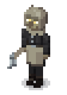
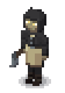
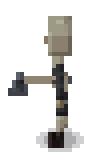
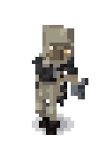

Drowned Dead
Drowned Dead is an elite of Lanternfen (level 16).
Drowned Dead is an elite of Lanternfen (level 16).
In the game
In the game the Drowned Dead is level 16, elite (a group's fight). It is undead. It is found in The Lantern Causeway. It can drop Drowned Reeve's Coat (13%) and Fen-Dark Pauldrons (13%). Its notable drops fill page 51 of the collection log.
Gallery







